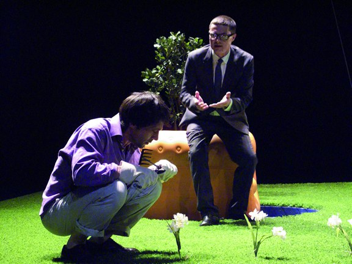
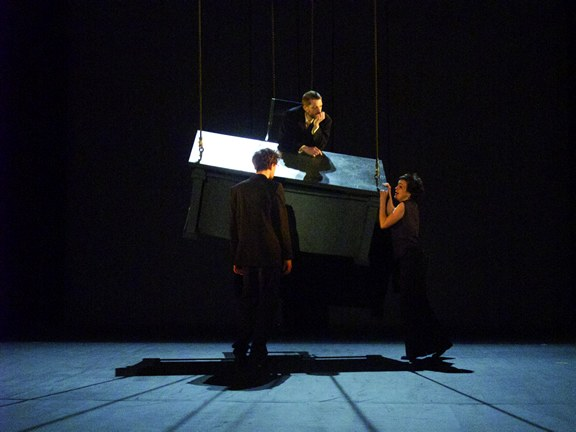
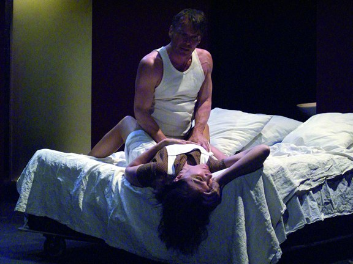
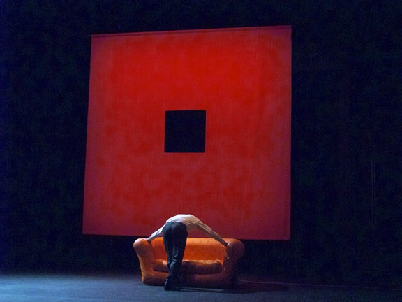
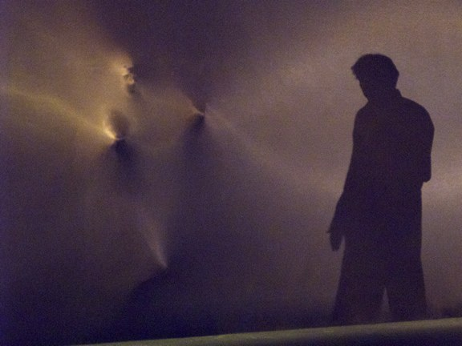
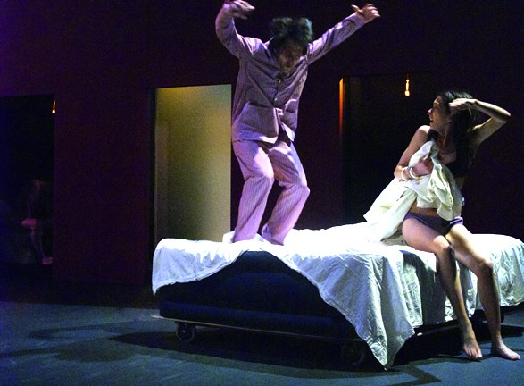
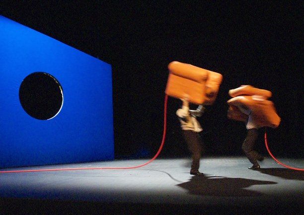

Sei figure, una piazza quadrata, un girotondo del desiderio. Dimitriadis riscrive Schnitzler nella lingua tagliente della Grecia post-tragica.
Six figures, a square plaza, a roundabout of desire. Dimitriadis rewrites Schnitzler in the cutting language of post-tragic Greece.
Six figures, une place carrée, une ronde du désir. Dimitriadis réécrit Schnitzler dans la langue tranchante de la Grèce post-tragique.
Per l'Odéon Théâtre de l'Europe di Parigi, nel 2010, Cristian Taraborrelli firma scene e costumi — con la co-firma del regista Giorgio Barberio Corsetti — di La Ronde du carré del drammaturgo greco Dimitris Dimitriadis (Salonicco 1944), uno degli autori europei contemporanei più importanti, traduttore di Genet, Bataille e Blanchot in greco. Luci di Jaufré Thumerel; sound design di Jean-Philippe François. La produzione è il secondo grande lavoro all'Odéon del sodalizio Corsetti-Taraborrelli, dopo Gertrude (Le Cri) del 2009 (Prix Syndicat de la Critique).
For the Odéon Théâtre de l'Europe in Paris, in 2010, Cristian Taraborrelli signs set and costumes — co-signed with director Giorgio Barberio Corsetti — of La Ronde du carré by Greek playwright Dimitris Dimitriadis (Thessaloniki 1944), one of the most important contemporary European authors. Lighting by Jaufré Thumerel; sound design by Jean-Philippe François. The production is the second major work at the Odéon of the Corsetti-Taraborrelli partnership.
Pour l'Odéon Théâtre de l'Europe de Paris, en 2010, Cristian Taraborrelli signe décors et costumes — cosignés avec le metteur en scène Giorgio Barberio Corsetti — de La Ronde du carré du dramaturge grec Dimitris Dimitriadis. Lumières de Jaufré Thumerel ; sound design de Jean-Philippe François.
L'Opera — Dimitriadis, post-tragico greco
Dimitris Dimitriadis è il più importante drammaturgo greco vivente. Nato a Salonicco nel 1944, dopo studi a Bruxelles si stabilisce a Parigi negli anni Settanta, traducendo in greco i grandi della tradizione moderna francese: Genet, Bataille, Blanchot, Klossowski. La sua scrittura teatrale — Le Prix de la révolte au marché noir (1968), Je meurs comme un pays (1978), Insenso (2007) — è post-tragica: assume la dissoluzione della tragedia greca classica come dato e cerca una nuova lingua del corpo, della parola, del desiderio politico.
La Ronde du carré (titolo originale: Η κουπας της πλατειας, 1985) è una riscrittura del Reigen di Schnitzler: dieci dialoghi a coppie in cui il desiderio passa da un personaggio all'altro come una merce. Dimitriadis sposta lo schema dalla Vienna fin-de-siècle alla piazza quadrata di una città mediterranea contemporanea, e rende i dieci dialoghi simultanei: gli amanti si scambiano sotto i nostri occhi, in pubblico, senza romanticismo. La parola è secca, di una crudezza che fa pensare a Heiner Müller; la struttura è quella di un'algebra del desiderio.
Dimitris Dimitriadis is the most important living Greek playwright. His theatrical writing is post-tragic: it assumes the dissolution of classical Greek tragedy as a given, and seeks a new language of the body, of the word, of political desire. La Ronde du carré (1985) is a rewriting of Schnitzler's Reigen: ten dialogues in pairs in which desire passes from one character to another like a commodity.
Dimitris Dimitriadis est le plus important dramaturge grec vivant. La Ronde du carré est une réécriture du Reigen de Schnitzler.
La Visione — Una piazza quadrata, sei figure
Corsetti rifiuta la messinscena psicologica realistica del Reigen. Di fronte alla scrittura post-tragica di Dimitriadis cerca uno spazio geometrico astratto: una piazza quadrata vuota al centro del palcoscenico dell'Odéon, delimitata da quattro pareti basse di cemento, con sei sedie di metallo come unici elementi mobili. Il dispositivo è spietato: i personaggi non hanno dove nascondersi; entrano dai quattro lati come in un quadrilatero di duello.
La scena di Cristian Taraborrelli con Corsetti gioca su materia povera, contemporanea, urbana: cemento grezzo, metallo, neon. La piazza è quella di una qualsiasi città europea contemporanea, da Atene a Marsiglia a Belgrado — una piazza di transito, un non-luogo dove il desiderio si scambia come fra estranei. Le luci di Jaufré Thumerel attraversano la scena come riflettori di stadio: clinici, freddi, indagatori. Il sound di Jean-Philippe François aggiunge un sottofondo industriale che scava sotto le parole.
I costumi sono contemporanei e dichiarativi: una camicia bianca, un'impermeabile grigio, una gonna nera, una giacca di pelle. Cristian rinuncia ad ogni tipologia: i sei personaggi sono cittadini di oggi, intercambiabili come gli amanti del girotondo. La produzione del 2010 è uno dei vertici del sodalizio Corsetti-Taraborrelli all'Odéon: una scena algebrica in cui il teatro diventa indagine politica del desiderio.
Corsetti refuses the realist psychological staging of Reigen. He seeks an abstract geometric space: an empty square plaza at the centre of the Odéon stage. Cristian Taraborrelli's set with Corsetti plays on poor, contemporary, urban matter. The costumes are contemporary and declarative. The 2010 production is one of the apexes of the Corsetti-Taraborrelli partnership at the Odéon.
Corsetti refuse la mise en scène réaliste psychologique du Reigen. La scénographie de Cristian Taraborrelli avec Corsetti joue sur une matière pauvre, contemporaine, urbaine.
Galleria — Foto di scena di Alain Fonteray
Foto di scena della produzione Odéon, maggio–giugno 2010, realizzate da Alain Fonteray. Cast: Julien Allouf, Anne Alvaro, Bruno Boulzaguet, Cécile Bournay, Luc-Antoine Diquéro, Maud Le Grevellec, Christophe Maltot, Laurent Pigeonnat. Musica di Gianfranco Tedeschi, luci di Jaufré Thumerel.
Stage photos from the Odéon production (May–June 2010), by Alain Fonteray. Cast includes Anne Alvaro, Luc-Antoine Diquéro, Christophe Maltot, and the full Odéon ensemble.
Photos de scène de la production Odéon (14 mai – 12 juin 2010) par Alain Fonteray.







Foto © Alain Fonteray · Odéon-Théâtre de l'Europe, 2010 · theatre-odeon.eu ↗
Tags
Rassegna Stampa
Materiali di rassegna stampa, recensioni e citazioni della critica disponibili su richiesta.
Press review materials, critical reviews and quotations available upon request.
Documents de revue de presse, critiques et citations disponibles sur demande.
Note di produzione
La produzione s'inscrive nell'arco trentennale del lavoro di Cristian Taraborrelli sulla scena come dispositivo cinetico, mai fondale. Materiali di scena, figurini, bozzetti, prototipi e maquette sono parte dell'archivio dello studio.
The production belongs to the thirty-year arc of Cristian Taraborrelli's work on the stage as a kinetic device, never a backdrop. Stage materials, costume sketches, prototypes and maquettes are part of the studio's archive.
La production s'inscrit dans l'arc trentenaire du travail de Cristian Taraborrelli sur la scène comme dispositif cinétique, jamais décor. Matériaux de scène, figurines, prototypes et maquettes font partie des archives de l'atelier.


Team